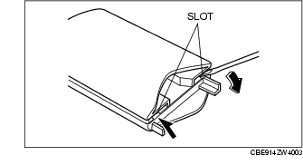
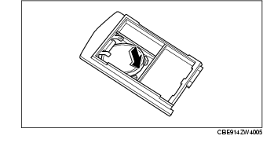

Transmitter battery replacement
Retractable Key Type
1. Insert a small screwdriver into the slot and push the tab to remove the key from the transmitter.

2. Insert a small screwdriver into the slot and gently pry open the transmitter.

3. Remove the battery.

4. Put in the new battery (CR1620) with the positive pole (+) facing down.

5. Align the front and back covers and snap the transmitter shut.
Battery specification6. Install the key to the transmitter.